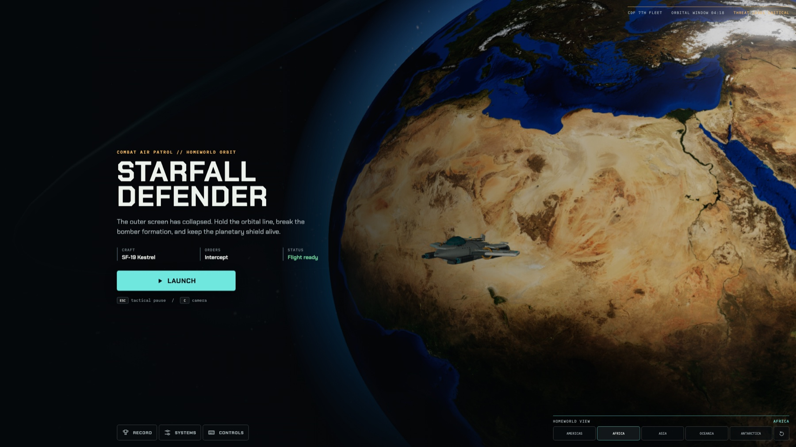

Starfall Defender
Browser-native 3D space combat
I co-built Starfall Defender with AI to create a browser-based 3D combat experience with responsive controls, tactical gameplay, and accessibility options. Players defend Earth in the SF-19 Kestrel and build proficiency through a 12-lesson flight school.
Play Starfall Defender